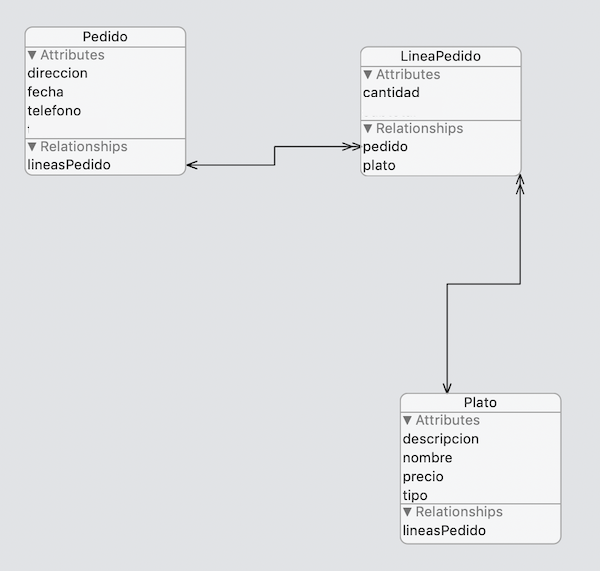

Miniproyecto: app restaurante (2,5 puntos en total)¶
El objetivo es desarrollar una pequeña aplicación para gestionar pedidos online a un restaurante. Para ello almacenaremos los datos de la carta y de los pedidos realizados por el usuario en Core Data.
Descárgate la plantilla de la aplicación desde moodle, aquí está ya implementada la mayor parte de la interfaz.
Inicialmente nos ocuparemos del modelo de datos y de leer los datos de los platos, que están almacenados en un JSON, y pasarlos a Core Data. Una vez hecho esto nos pondremos a implementar las funcionalidades de la aplicación.
El modelo de datos (0,5 puntos)¶
En el proyecto abre el fichero Restaurante.xcdatamodeld y crea el siguiente modelo de datos
Nuestro modelo de datos debe tener tres entidades, Plato, Pedido y LineaPedido. Esta última es la que relaciona los platos con los pedidos, guardando cuántas unidades de un plato se han incluido en un pedido.
En la figura, las flechas dobles representan relaciones "a muchos" y las flechas simples "a uno"

Consejos
- Crea primero todas las entidades y después las relaciones, si no no podrás especificar la entidad destino de cada relación
- Las relaciones por defecto se crean "de uno a uno" y sin orden, recuerda modificar esto en el panel derecho de Xcode si es necesario
Cada entidad debe tener las siguientes propiedades y relaciones
Plato:- Propiedades:
nombrede tipoStringdescripcionde tipoStringpreciode tipoDoubletipode tipoString
- Relaciones:
lineasPedido, relación "a muchos" con destinoLineaPedido. La inversa es la relaciónplato
- Propiedades:
Pedido:- Propiedades:
direccionde tipoStringfechade tipoDatetelefonode tipoString
- Relaciones:
lineasPedido, relación "a muchos" con destinoLineaPedido. La relación debe ser ordenada, para poder mostrar las lineas de un pedido siempre en el mismo orden. La inversa es la relaciónpedido. En la regla de borrado (delete rule) ponCascadepara que al eliminar un pedido se eliminen automáticamente sus líneas.
- Propiedades:
LineaPedido:- Propiedades
cantidadde tipoInteger 16
- Relaciones
pedido, relación "a uno" con destinoPedido. La inversa es la relaciónlineasPedidoplato, relación "a uno" con destinoPlato. La inversa es la relaciónlineasPedido
- Propiedades
Simplificaciones
Deberíamos usar tipos Decimal en los precios para evitar errores de redondeo, pero usaremos Double por simplicidad, ya que Decimal no se acepta directamente en Core Data y tendríamos que usar un transformable. Además, el tipo del plato debería ser un enumerado, pero estos tampoco se pueden almacenar directamente en Core Data.
Inicializar los datos (0,25 puntos)¶
Un problema habitual en Core Data es cómo rellenar inicialmente la base de datos. Un enfoque muy habitual es incluir en el proyecto un archivo con los datos en algún formato estándar (JSON, CSV, YAML,..) y copiarlos a Core Data la primera vez que se ejeuta la app. Es lo que haremos aquí.
Los datos de los platos del restaurante están en un archivo platos.json. En el AppDelegate hay una función importPlatos que lee el JSON, lo almacena en un array de structs de tipo DatosPlato con los datos correspondientes, y pone una preferencia de usuario llamada platosImportados a true. El JSON solo se lee si la preferencia está a false (valor por defecto)
Añade código Swift que copie los datos de los structs DatosPlato a entidades Plato y guarde el contexto de persistencia para hacer efectivos los cambios. Tendrás que introducir el código en el AppDelegate, línea 34, donde está el comentario de //TODO: copiar los datos. El array de structs de tipo DatosPlato se llama datos. Recórrelo y copia todos sus datos a Core Data. Las propiedades de DatosPlato tienen los mismos nombres y tipos que en la entidad Plato.
Tras esto, con la ayuda de la aplicación SimSim puedes echarle un vistazo a la base de datos de SQLite creada por Core Data para ver si están los registros. En SimSim selecciona la app Restaurante y luego la opción Terminal para abrir una terminal en la carpeta de la app en el emulador. Para ver a base de datos SQLite puedes hacer en esta terminal:
cd "Library/Application Support"
sqlite3 Restaurante.sqlite
##Debería aparecer el prompt de sqlite -> "sqlite>"
##Con esta orden puedes ver la estructura de la BD
.schema
##Las tablas tendrán el mismo nombre que las entidades de Core Data con una "Z" delante
##Por tanto puedes ver los platos con
select * from ZPLATO;
##Puedes salir de sqlite con Ctrl-Z, o cerrar la terminal, ya no te hace falta
Para forzar la recarga de los datos puedes usar también la aplicación SimSim . Tendrás que borrar las preferencias y la base de datos. Puedes borrarlo todo automáticamente con la opción Reset Application Data. Si quieres borrarlo a mano, las preferencias están en Library/Preferences y recuerda que la BD está en Library/Application Support.
A partir de ahora implementaremos las funcionalidades de la app. La mayor parte de la interfaz ya está creada (salvo la última pantalla), tú tienes que implementar las funcionalidades relacionadas con Core Data.
Funcionalidad: La Carta (0,5 puntos)¶
Esta parte de la app es la que muestra los platos y nos permite añadirlos al pedido.
En la pantalla de "Carta" se deben mostrar los datos de los platos. Está controlada por el PlatosViewController. Iremos primero con que salgan los platos listados y luego con la funcionalidad del botón de "Añadir" al pedido.
Listado de platos¶
Usa un NSFetchedResultsController para listar los platos en la tabla. Haz que los platos se agrupen en secciones según su tipo.
- Declara e inicializa el
NSFetchedResultsControlleren elPlatosViewController. Es como los de la sesión anterior con la diferencia de que no debería usar una cache (pasar el parámetrocacheNameanil) , ya que al escribir en la barra de búsqueda cambiamos la fetch request y por tanto invalidamos la cache, por lo que en este caso no tiene utilidad.
Ayuda
Para lo anterior, puedes usar como guía el código de ejemplo del apartado "inicializar el Fetched Results Controller". Pero con diferencias, algunas evidentes:
- Recuerda poner el nombre de cache a
nil - La entidad es
Platoen lugar deMensaje - Hay que ordenar por "tipo" en vez de por "fecha"
- Hay que crear secciones automáticas basándose en el tipo (mira el apartado "secciones de tabla automáticas ")
- Rellena el código de los métodos que devuelven el número de secciones, de filas en cada sección y que devuelven las celdas rellenadas de la tabla. Estas celdas son de la clase
PlatoTableViewCell, si miras la clase verás que ya tiene definidos outlets para poder rellenar los datos (son tres labels:nombreLabel,descripcionLabelyprecioLabel)
Ayuda
Para lo anterior, puedes usar como guía el código de ejemplo del apartado "Mostrar los datos en la tabla". Para saber cómo obtener el título de cada sección de la tabla consulta el apartado "Secciones de tabla automáticas"
Al terminar este apartado debería salir la lista de platos de la carta en la primera pantalla de la app. Todavía no funcionará el botón "Añadir" de cada plato ni se podrán filtrar platos.
Búsqueda/Filtrado de platos¶
Implementa una búsqueda/filtrado de platos como hiciste en la aplicación de notas, que busque texto en el nombre o en la descripción del plato. Para aplicar el "filtro":
Declara un UISearchController en el PlatosViewController
var searchController : UISearchController!
e inicialízalo en el viewDidLoad
self.searchController = UISearchController(searchResultsController: nil)
Añade UISearchResultsUpdating a la cabecera del controller para que se ocupe de los resultados de la búsqueda, debe quedar como:
class PlatosViewController: UIViewController, UITableViewDataSource, PlatoTableViewCellDelegate, UISearchResultsUpdating {
...
}
Xcode
Al añadir el UISearchResultsUpdating Xcode se "quejará"" de que falta implementar el método updateSearchResults. Lo haremos en un momento.
Configura el search controller y añádelo a la tabla en el viewDidLoad
self.searchController.searchResultsUpdater = self
//Configuramos el search controller
self.searchController.obscuresBackgroundDuringPresentation = false
self.searchController.searchBar.placeholder = "Buscar texto"
//Lo añadimos a la tabla
self.searchController.searchBar.sizeToFit()
self.tabla.tableHeaderView = searchController.searchBar
Opcionalmente puedes usar un Throttler para que no busque en cada pulsación de tecla, sino que espere una fracción de segundo. En caso de que quieras usarlo, bájate el código del enlace anterior, ponlo en un archivo en tu proyecto y define en el controller una variable de la clase Throttler:
let throttler = Throttler(minimumDelay: 0.5)
Añade el método updateSearchResults al PlatosViewController, aquí es donde realmente tienes que implementar el filtrado (en un momento veremos cómo)
func updateSearchResults(for searchController: UISearchController) {
//este throttler.throttle solo si quieres usar throttling
//en caso contrario solo el let textoBuscado=... etc
throttler.throttle {
let textoBuscado = searchController.searchBar.text!
//Aquí iría tu código de búsqueda
}
}
Borrar la cache
Ya hemos comentado que el NSFetchedResultsController no necesita cache, pero si la tuviera, en este momento se debería borrar con el método NSFetchedResultsController.deleteCache(withName:) para evitar un error al cambiar la fetch request.
Crea un predicado (NSPredicate) con la condición de búsqueda apropiada para buscar el textoBuscado en el nombre o la descripción (no debe distinguir mayúsculas/minúsculas ni acentos) y asígnaselo a la propiedad fetchRequest.predicate del NSFetchedResultsController.
Ayuda
Para lo anterior, puedes usar como guía el apartado "Predicados como cadenas" del tema de búsquedas en Core Data.
Para que se actualicen los datos tendrás que hacer:
try! self.frc.performFetch()
self.tabla.reloadData()
Problema con las búsquedas
Si pruebas la búsqueda verás que con el cuadro de búsqueda inicialmente vacío se muestran todos los platos, cuando escribes algo se filtran pero cuando vuelves a borrar y lo dejas vacío no se ve ningún plato. Esto es porque aunque textoBuscadosea vacío sigue actuando el predicado de búsqueda. ¿Se te ocurre cómo podrías arreglarlo? Inténtalo.
Añadir al pedido actual¶
Las celdas de la tabla tienen un delegate al que avisarán de que se ha pulsado el botón "Añadir". Cada celda almacena su IndexPath (su número de fila y de sección) y tiene como delegate al controller de la pantalla.
Para avisar al controller de que se ha pulsado sobre "Añadir" se llama al método platoAñadido. En este método tienes que obtener la entidad Plato elegida (la que está en la fila y sección seleccionadas) para que el código restante (ya implementado) se lo pase al controller de la pantalla siguiente.
Warning
Tendrás que descomentar además la línea que pone //TODO: descomentar esta línea del PlatosViewController y la 21 del PedidoActualViewController. Estaban comentadas para que el código compilara en el estado inicial del proyecto, antes de que existiera la entidad "Plato"
Para probar que está bien, en el viewDidLoad del PedidoActualViewController imprime en la consola con print algún dato de la propiedad platoElegido, para comprobar que se corresponde con el seleccionado. De momento el plato no aparece todavía en la pantalla del móvil, de eso nos ocuparemos en el siguiente apartado.
Funcionalidad: El pedido actual (0,75 puntos)¶
Esta parte de la app muestra los datos del pedido actual, añade los platos seleccionados al pedido y permite hacer el pedido o cancelarlo. La pantalla está controlada por el PedidoActualViewController.
Problemas con el Tab bar
A esta pantalla se puede llegar de dos modos, al añadir un plato al pedido o bien con el botón "Tu pedido" del tab bar en la parte inferior de la pantalla. Mientras estés implementando esta pantalla es probable que el botón del tab bar cause un error fatal, al final veremos por qué y lo intentaremos arreglar.
El pedido actual no se puede guardar en el propio controller ya que por la navegación entre pantallas este se destruiría al salir de ella. Por eso se debe guardar aparte, en la variable pedidoActual del singleton StateSingleton.shared. Esta variable estaba comentada para que no diera error ya que hasta que no creaste el modelo de datos no existía la entidad Pedido, descoméntala (línea 5 de carpeta State/Archivo StateSingleton.swift).
Añadir el plato elegido al pedido¶
En el viewDidLoad de PedidoActualViewController nos tenemos que ocupar de añadir el plato elegido al pedido actual
- Primero comprueba si no hay en memoria un
Pedidoactual (StateSingleton.shared.pedidoActual==nil), y si es así créalo en Core Data, guárdalo en elStateSingletony haz save() del contexto de persistencia - Crea una nueva
LineaPedido- Asígnale cantidad 1 (luego se podrá cambiar con los botones de
+/-) - Asóciala con el plato elegido. Recuerda que el plato elegido debería estar en la propiedad
platoElegidodel controller. - Asóciala con el pedido
- Asígnale cantidad 1 (luego se podrá cambiar con los botones de
Asociar entidades en Core Data
Recuerda que las relaciones en Core Data son como propiedades de los objetos. Por ejemplo para asociar una línea de pedido con un plato harías simplemente
//Suponiendo que "linea" es de tipo LineaPedido y "elPlato" de tipo "Plato"
linea.plato = elPlato
addTo.... El ejemplo anterior lo podrías hacer también como
elPlato.addToLineasPedido(linea)
Aunque es mucho menos intuitivo
- Guarda el contexto de persistencia con
save()para que los cambios tengan efecto en la BD.
Listar los platos del pedido¶
Como puedes ver en el código del PedidoActualViewController éste hace de UITableViewDataSource, es decir es el responsable de darle a iOS los datos para pintar la tabla que muestre el pedido actual.
Tendrás que completar el código de los métodos
tableView(_ tableView: UITableView, numberOfRowsInSection section: Int)tableView(_ tableView: UITableView, cellForRowAt indexPath: IndexPath)
para que la tabla se vea en pantalla. La celda es de la clase LineaPedidoTableViewCell y como podrás ver en ella tiene un nombreLabel y un cantidadLabel que son los datos que tendrás que rellenar con el nombre del plato y la cantidad de la línea de pedido respectivamente.
Cambiar la cantidad de un plato¶
En esta pantalla también se puede cambiar el número de unidades que queremos pedir de un plato.
Para simplificar se supondrá que solo podemos movernos entre 1 y 100, no podemos bajar las unidades a 0 y eliminar el plato
Al igual que en la pantalla anterior se usa la idea de delegate para saber qué celda se está seleccionando. Las celdas son de la clase LineaPedidoTableviewCell, y cada vez que se pulsa en un + o un - se avisa al delegate (en este caso el controller), pasándole el número de la fila.
La interfaz ya está configurada para que el método cantidadCambiada del controller se llame cada vez que el usuario cambia la cantidad de un plato. Añádele código que obtenga la línea de pedido correspondiente, cambie la cantidad y guarde el contexto de persistencia
Realizar y cancelar pedido¶
En la pantalla tienes dos botones para realizar y cancelar el pedido.
- Si se pulsa a "realizar" bastará con que le asignes la fecha actual al pedido, crees un nuevo pedido en
StateSingleton.shared.pedidoActualy muestres un mensaje al usuario indicando que "su pedido está en camino" o algo similar - Si se pulsa a "cancelar" deberías borrar en Core Data el pedido actual. Si la regla de borrado en cascada está puesta correctamente, al borrar un pedido deberían borrarse automáticamente todas sus líneas.
El botón "Tu pedido" del tab bar¶
Como ya hemos comentado, a la pantalla de pedido actual también se puede llegar pulsando el botón de "Tu pedido" en el tab bar inferior. No obstante, como al ir por este camino no hay un platoElegido es bastante probable que tu código falle al asumir que sí lo hay. Si falla, cambia el código para que si hay platoElegido (!=nil) cree la nueva línea de pedido pero no lo haga si es nil.
Funcionalidad: Tu historial (hasta 0,5 puntos)¶
En esta pantalla se deberían mostrar todos los pedidos realizados por el usuario actual. La pantalla está controlada por el (PedidosViewController). Está en blanco y puedes crear la interfaz del modo que desees.
- (0,25 puntos) Si en el
viewWillAppearmuestras los datos de todos los pedidos en la consola conprint, solo para ver que efectivamente se han almacenado correctamente - (0,5 puntos) Si en lugar de lo anterior muestras en una tabla una línea con el resumen de cada pedido (fecha, total y número de platos pedidos)